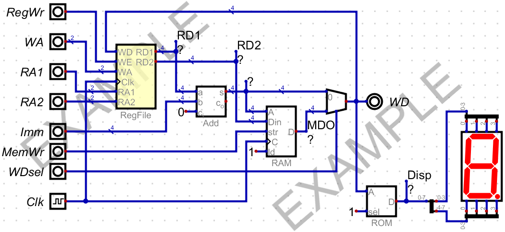
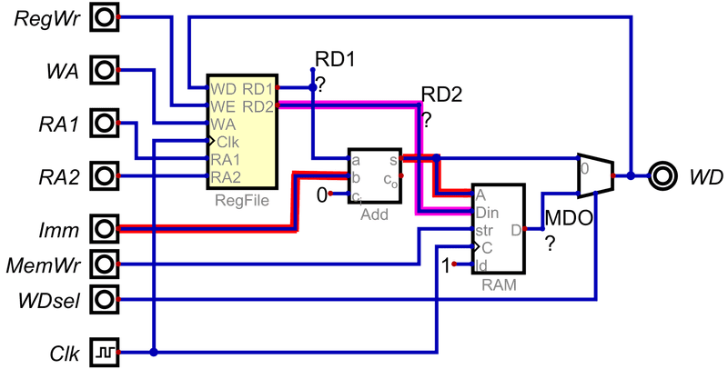
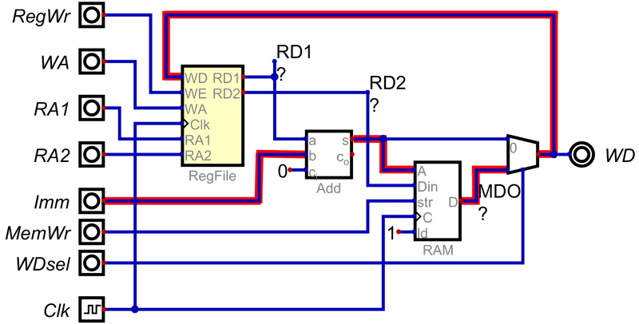

存储器应用实验
实验原理
实验电路如图 1所示。该电路将静态随机存取存储器RAM、只读存储器ROM和寄存器堆组织到一起，构成了一个应用电路。

图 1. 存储器应用电路图
实验任务
验证任务
依次完成以下仿真任务，通过仿真验证数据的正确性，并保存仿真过程数据文件。
-
数据写入寄存器堆
将2个常数分别存入R1、R2寄存器。
常数通过Imm输入引脚送入。 从图 1可以看出，Imm并没有直接连在寄存器堆的WD写端口，而是送到了加法器的B输入端；而加法器的输出经过一个多路器后连接到WD写端口。所以要将Imm送到寄存器堆的写端口，必须经过加法器。 在前面寄存器堆的实验中已经设计R0寄存器的值恒为0，可以用加法器将Imm加上R0寄存器值，就能够将Imm传送到加法器的输出端；再通过WDsel控制多路器将Imm传送到寄存器堆的写端口。 信息传递路径如图 2所示。
图 2. 常数存入寄存器的信息传递路径 -
寄存器数据写入RAM
将R1和R2寄存器的内容，分别写入到RAM的两个存储单元中。
从图 1可以看出，RAM的数据输入来自寄存器堆的读端口2，可以利用上一个任务已经存入数据的寄存器，将其值写入存储器的某一存储单元。 存储器的地址来自加法器的输出，因此可以用Imm加上R0来指定存储器的地址。 信息传递路径如图 3所示。
图 3. 寄存器数据写入存储器的信息传递路径 -
从RAM读出数据并写入寄存器堆
将上面已经存入RAM的数据读出并写入R3寄存器。
图 4. 存储器数据写入寄存器的信息传递路径